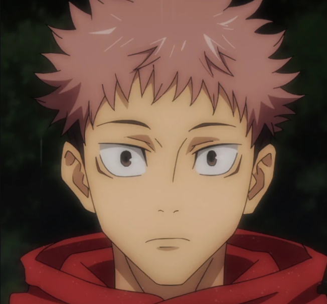
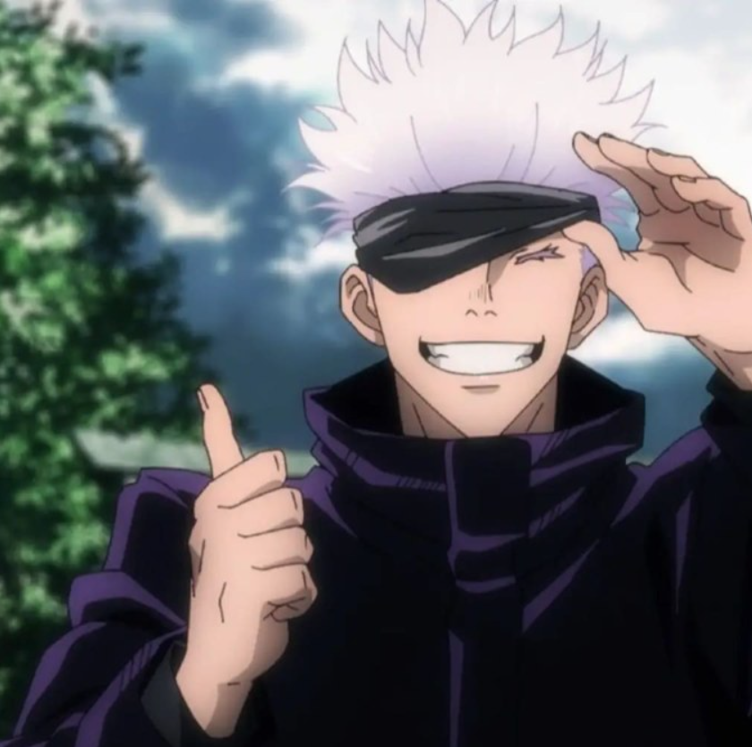
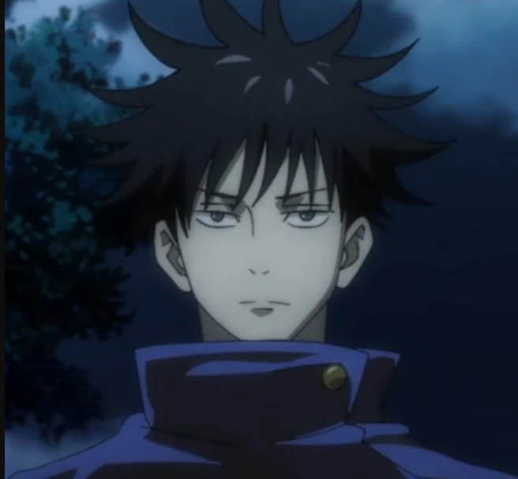
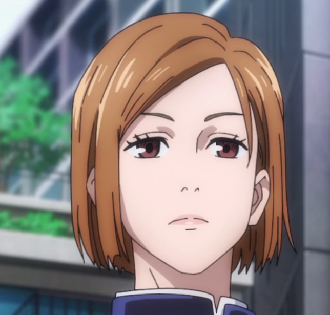
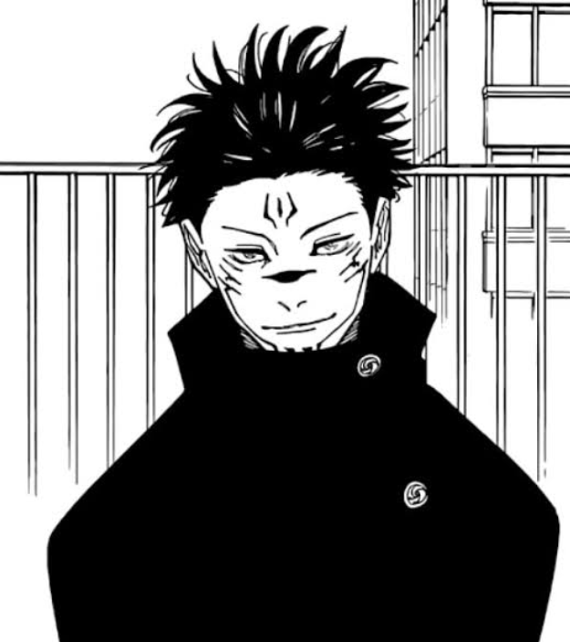

Yuji Itadori es el protagonista de Jujutsu Kaisen. Es un estudiante de secundaria con una fuerza física impresionante y un carácter amable y optimista. Su vida da un giro inesperado cuando, para salvar a sus amigos de un espíritu maldito, ingiere el dedo de Ryomen Sukuna, un poderoso y malvado espíritu maldito de 20 partes. Al hacerlo, Yuji se convierte en el anfitrión de Sukuna, un riesgo enorme debido a la naturaleza destructiva de la maldición. Al ser poseído, Yuji es reclutado por la Escuela Técnica de Magia Jujutsu de Tokio, donde entrena para convertirse en un hechicero. Su misión es encontrar y consumir los otros dedos de Sukuna, para luego ser exorcizado y acabar con el espíritu para siempre. Aunque Yuji carga con este destino peligroso, se muestra decidido a salvar a otros, a menudo cuestionando la moralidad de la lucha entre hechiceros y maldiciones. Su personalidad y valentía lo hacen un personaje querido, y su vínculo con Sukuna genera una tensión constante en su viaje.

Personajes Principales de Jujutsu Kaisen
Yuji Itadori
Protagonista
Satoru Gojo
El más fuerte
Satoru Gojo es uno de los personajes más poderosos en Jujutsu Kaisen y es maestro en la Escuela Técnica de Magia Jujutsu de Tokio. Conocido por su habilidad sobresaliente, su técnica más famosa es la "Técnica de Infinito", que le permite crear una barrera que detiene cualquier ataque. Gojo es carismático, con una personalidad despreocupada y a menudo humorística, pero también es profundamente responsable y se preocupa por sus estudiantes, incluyendo a Yuji Itadori, Megumi Fushiguro y Nobara Kugisaki. Su objetivo es desafiar y reformar el sistema de hechiceros, luchando por un futuro mejor y más justo en la lucha contra las maldiciones. Su presencia en la serie eleva el nivel de peligro y los desafíos que enfrentan los protagonistas.
Megumi Fushiguro
El shikigami
Megumi Fushiguro es un compañero de Yuji Itadori y un estudiante de la Escuela Técnica de Magia Jujutsu de Tokio en Jujutsu Kaisen. Es parte del clan Fushiguro, conocido por su uso de shikigami, espíritus familiares que invoca para luchar. Megumi es serio y reservado, pero muestra un fuerte sentido de justicia y un deseo de proteger a los demás. A pesar de su naturaleza fría, se preocupa profundamente por sus amigos y tiene un potencial inmenso como hechicero. Su lucha interna con su linaje y su responsabilidad como hechicero es un tema recurrente en su desarrollo.
Nobara Kugisaki
La guerrera
Nobara Kugisaki es una estudiante de magia jujutsu y compañera de Yuji y Megumi en Jujutsu Kaisen. Es fuerte, decidida y no duda en expresar su opinión. Utiliza técnicas de manipulación de muñecos y herramientas malditas para luchar contra las maldiciones, mostrando gran habilidad en combate. A pesar de su exterior duro, Nobara valora la amistad y tiene un sentido de justicia muy fuerte. Su personalidad y valentía la convierten en un miembro esencial del grupo y una fuerza a tener en cuenta en la lucha contra las maldiciones.
Ryomen Sukuna
El Rey de las maldiciones
Ryomen Sukuna es una de las principales antagonistas de Jujutsu Kaisen y una poderosa maldición conocida como el "Rey de las Malediciones". Originalmente un hechicero, Sukuna se convirtió en una maldición tras su muerte, y su poder es temido por todos los hechiceros. Al ser consumido por Yuji Itadori, Sukuna vive dentro de él, lo que provoca una lucha constante entre los dos. Sukuna es astuto, manipulador y disfruta del caos, lo que lo convierte en una amenaza peligrosa para Yuji y sus amigos.
